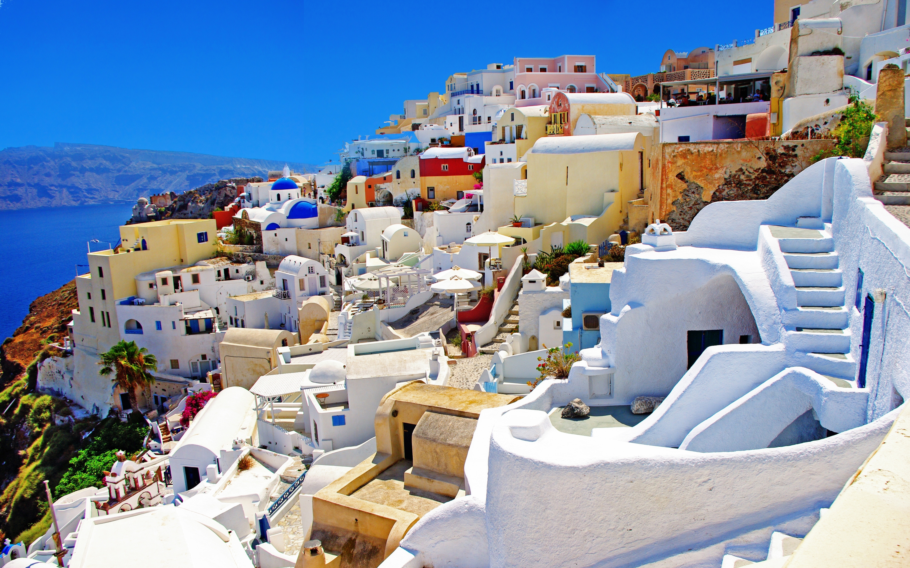
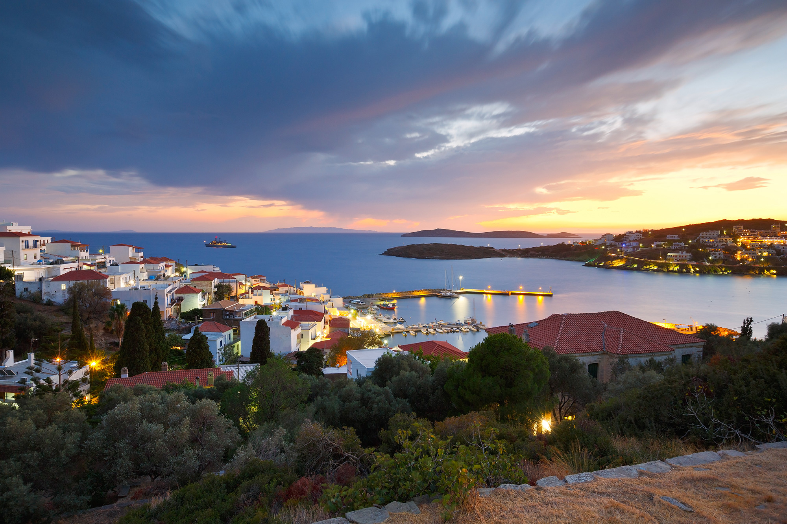
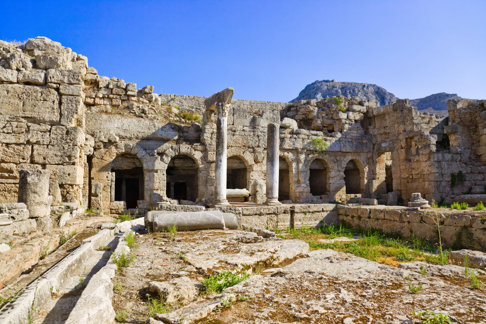
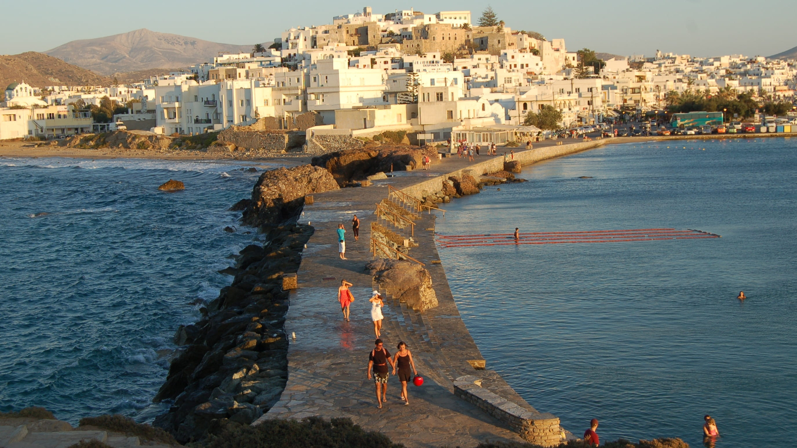

HOME
EXPLORE
FOOD
TRAVEL INFO
Greece Attractions
Places to go in Greece!

Santorini is one of the Cyclades islands in the Aegean Sea.
Santorini

Andros is the northernmost island of the Greek Cyclades archipelago, about 10 km southeast of Euboea.
Andros

Corinth is the successor to an ancient city and is a former municipality in Corinthia, Peloponnese.
Corinth
Corfu, an island off Greece's northwest coast in the Ionian Sea.
Corfu

Naxos is a Greek island in the South Aegean, the largest of the Cyclades island group.
Naxos